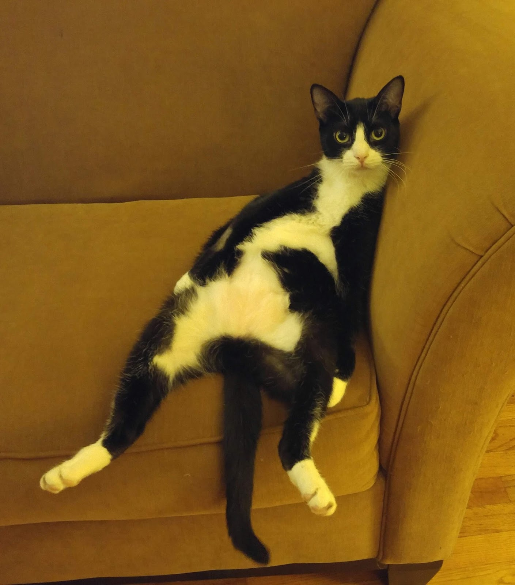

This is how a lazy cat looks like
This is how a fat cat looks like (probably from being lazy)

This is how a scared cat looks like (probably when seing water)

This is how a wet cat looks like
This is how an angry cat looks like (probably after being wet)